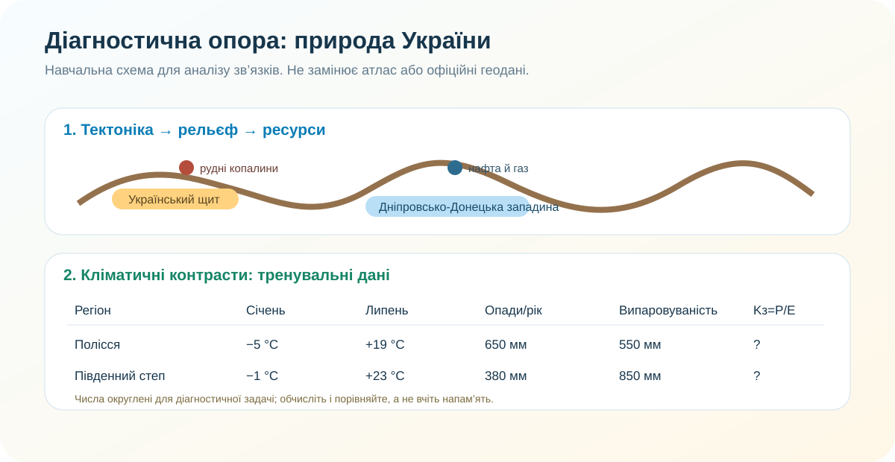

0–3 хв
Перед початком
Заповніть дані. Після цього відкриється робота.
Оцінювання: 4 бали за кожну групу результатів. Усього — 12 балів.
3–6 хв
Єдине джерело даних для кількох завдань

Схема навчальна. Числа в таблиці округлені спеціально для обчислень.
Правило діагностики: відповідь без доказу там, де просять доказ, — це пів відповіді. Географія дуже не любить «бо так».
Можна: користуватися чернеткою й калькулятором. Не треба: шукати готові відповіді — більшість завдань побудовано на аналізі даних прямо на сторінці.
6–16 хв • ГР1
ГР1. Досліджуємо й працюємо з даними — 4 бали
1 бал1. Обчисліть коефіцієнт зволоження Полісся: Kз=P/E.
1 бал2. Обчисліть Kз для південного степу.
1 бал3. Який висновок найкраще відповідає цим двом коефіцієнтам?
1 бал4. Учень каже: «Якщо опадів 500 мм, зволоження завжди достатнє». Якої змінної бракує?
16–26 хв • ГР2
ГР2. Пояснюємо просторові закономірності — 4 бали
1 бал5. Чому рудні корисні копалини часто пов’язані з Українським щитом?
1 бал6. Яка пара «структура → ресурс» логічніша?
1 бал7. Чому сучасний рельєф не можна пояснити лише тектонічною будовою?
1 бал8. Де ймовірніше знайти найвиразніші молоді складчасті форми рельєфу?
26–32 хв • ГР3
ГР3. Оцінюємо ризики й аргументуємо — 4 бали
1 бал9. Що точніше описує різницю між погодою і кліматом?
1 бал10. Який ланцюг найкраще пояснює посуху як ризик?
1 бал11. Яке твердження про зміну клімату науково коректніше?
1 бал12. Оберіть найкращий CER-висновок:
32–35 хв
Самооцінювання й наступний крок
Що було найважчим?
Що зробите перед наступною темою?
Не плутайте самооцінку з оцінкою. Вона потрібна не для «поставити собі бал», а щоб побачити, де саме знання дають збій.